iPAS AI應用規劃師 經典題庫
L21101 自然語言處理技術與應用
出題方向
1
NLP基本概念與範疇
2
文本前處理技術
3
文本表示方法 (Text Representation)
4
核心NLP任務 (Core NLP Tasks)
5
語言模型 (Language Models)
6
NLP應用場景
7
NLP評估指標
8
進階NLP模型與趨勢
#1
★★★★★
自然語言處理 (Natural Language Processing, NLP) 的主要目標是什麼？
答案解析
自然語言處理 (NLP) 是人工智慧 (AI) 和語言學領域的一個分支，專注於實現電腦與人類自然語言之間的有效互動。其核心目標是賦予電腦處理和「理解」人類語言的能力，包括文本和語音，進而能夠執行如翻譯、情感分析、問答、摘要生成等任務。其他選項描述的是電腦科學的不同領域。
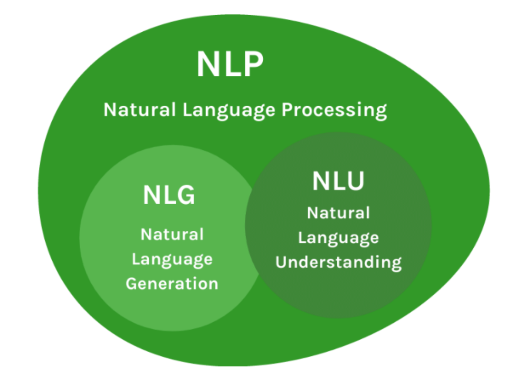
#2
★★★★★
在文本前處理 (Text Preprocessing) 過程中，「斷詞」(Tokenization) 指的是什麼？
答案解析
斷詞 (Tokenization) 是 NLP
中最基礎且重要的前處理步驟之一。它的目的是將原始的、連續的文本流（如句子或段落）分解成一系列獨立的、有意義的單元，稱為「詞符」(Tokens)。這些詞符通常是單字、標點符號或數字。斷詞為後續的文本分析（如特徵提取、模型訓練）奠定了基礎。選項 A、B 分別描述停用詞移除和詞形還原/詞幹提取，選項 D 描述的是詞頻計算，這些都是
NLP 前處理或分析的不同步驟。
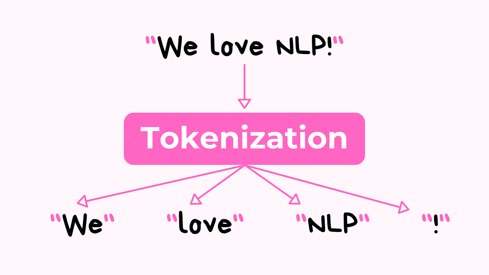
#3
★★★★
TF-IDF (Term Frequency-Inverse Document Frequency) 是一種常用的文本表示方法，其中 IDF (Inverse Document Frequency) 的主要作用是什麼？
答案解析
TF-IDF
是一種統計方法，用以評估一個詞語對於一個文件集或一個語料庫中的一份文件的重要程度。TF (Term Frequency)
指的是詞語在文件中的出現頻率。IDF (Inverse
Document Frequency) 則衡量詞語的普遍性。如果一個詞語在很多文件中都出現，它的 IDF 值會較低；反之，如果只在少數文件中出現，IDF 值會較高。TF 和
IDF 相乘得到 TF-IDF
值，這個值可以突顯那些在特定文件中頻繁出現但在整個語料庫中相對罕見的詞語，這些詞語通常更能代表該文件的內容。因此，IDF 的主要作用是降低普遍詞（如停用詞）的影響力，提升具有區別性詞語的重要性。
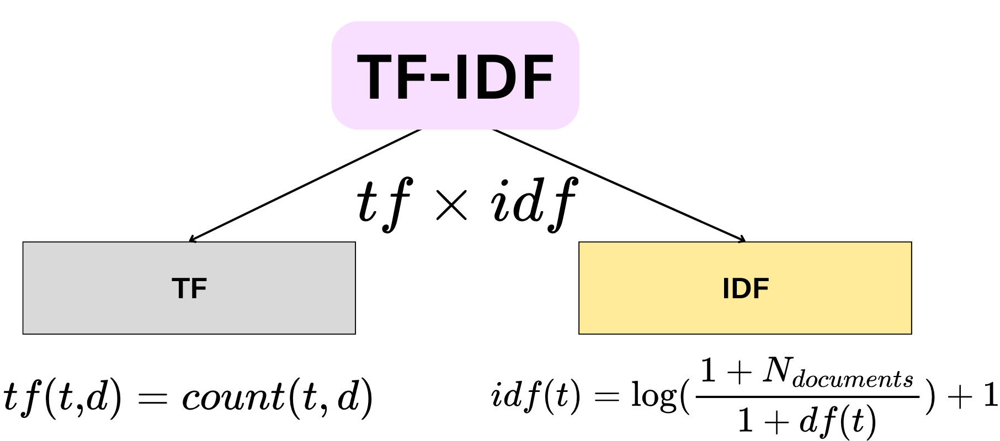
#4
★★★★
在 NLP 任務中，「命名實體識別」(Named Entity
Recognition, NER) 的目標是？
答案解析
命名實體識別 (NER) 是資訊提取 (Information Extraction) 的一個子任務，旨在定位和分類文本中預先定義好的命名實體類別。常見的實體類別包括人名 (PER)、組織名 (ORG)、地名
(LOC/GPE)、時間表達式
(TIME)、日期 (DATE)、貨幣 (MONEY)、百分比
(PERCENT) 等。NER
對於理解文本內容、建構知識圖譜、問答系統等應用至關重要。選項 A 是情感分析，選項 B 是詞性標註 (Part-of-Speech Tagging)，選項 D 是機器翻譯。

#5
★★★★★
近年來在 NLP 領域取得巨大成功的 Transformer 模型，其核心機制是什麼？
答案解析
Transformer 模型（由 Google 在
2017 年的論文 "Attention Is All You Need" 中提出）摒棄了傳統的循環神經網路
(Recurrent Neural Network, RNN) 和卷積神經網路 (Convolutional Neural Network, CNN) 架構，完全基於自注意力機制 (Self-Attention) 來捕捉輸入序列內部的依賴關係以及輸入和輸出序列之間的關係。自注意力機制允許模型在處理序列中的某個詞語時，直接計算該詞語與序列中所有其他詞語的關聯程度（注意力權重），從而能夠更好地捕捉長距離依賴關係，並且易於平行化計算。卷積和池化主要用於 CNN，循環連接是 RNN 的核心。
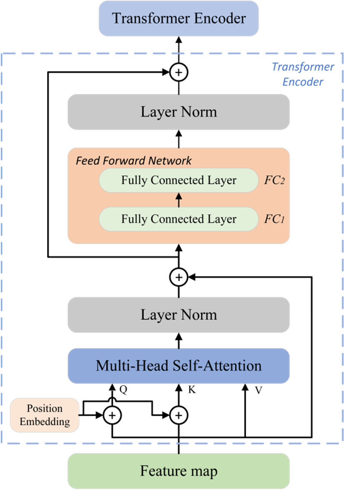
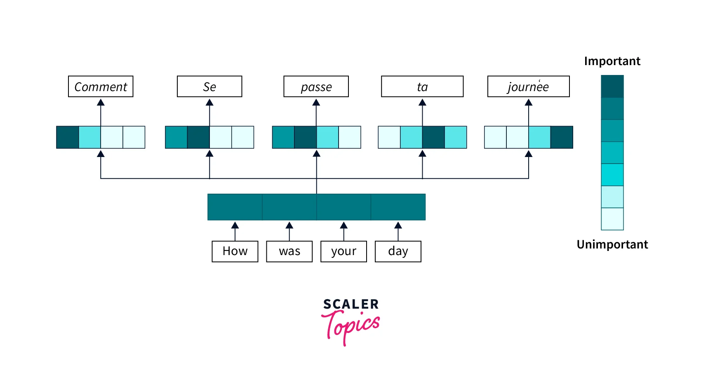
#6
★★★★
以下哪項是自然語言處理 (NLP) 的典型應用場景？
答案解析
情感分析是 NLP 的一個重要應用，旨在分析文本（如評論、社群媒體貼文）中表達的情緒、觀點或態度，判斷其為正面、負面或中性。圖像辨識屬於電腦視覺 (Computer Vision) 領域。語音合成（Text-to-Speech,
TTS）雖然與語言相關，但通常被視為語音處理 (Speech Processing)
的一部分，但與 NLP 密切相關。推薦系統雖然可能利用 NLP
技術來分析商品描述或使用者評論，但其本身是一個更廣泛的領域。情感分析是直接以處理和理解文本內容為核心的
NLP 應用。

#7
★★★★
在文本前處理中，「停用詞」(Stop Words) 通常指的是什麼？
答案解析
停用詞是指在自然語言文本中出現頻率非常高，但對於理解文本主要內容或執行特定 NLP 任務（如資訊檢索、文本分類）貢獻不大或甚至可能產生干擾的詞語。例如，在中文中的「的」、「了」、「是」，在英文中的
"a"、"an"、"the"、"is"、"in" 等。在許多 NLP 應用的前處理階段，會將這些停用詞移除，以減少數據維度、降低計算複雜度並可能提高模型效能。

#8
★★★★★
詞嵌入 (Word Embedding) 技術（如 Word2Vec, GloVe）的主要目的是什麼？
答案解析
傳統的 one-hot encoding
表示詞語會導致維度災難且無法捕捉詞語間的語意關係。詞嵌入技術旨在學習詞語的分布式表示
(Distributed
Representation)，將每個詞語表示為一個低維度（通常幾十到幾百維）的實數向量。這種表示方法的關鍵優勢在於它能夠捕捉詞語之間的語意和語法關係。在訓練好的詞嵌入空間中，語意相近的詞語（如 "國王" 和
"皇后"）或具有相似上下文的詞語，其對應的向量在空間中的距離會比較接近。這使得模型能夠更好地理解和泛化語言模式。

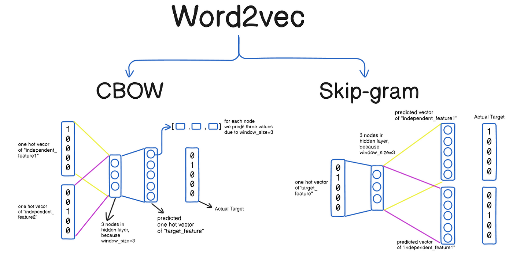
#9
★★★
詞性標註 (Part-of-Speech Tagging, POS
Tagging) 是 NLP 中的一項基礎任務，它的作用是？
答案解析
詞性標註 (POS Tagging) 是根據詞語在句子中的上下文，為其分配一個預定義的語法類別（詞性標籤）的過程。常見的詞性標籤包括名詞
(Noun, NN)、動詞
(Verb, VB)、形容詞
(Adjective, JJ)、副詞
(Adverb, RB)、介詞
(Preposition, IN)、代名詞 (Pronoun,
PRP) 等。POS
標註是許多更高級 NLP 任務（如句法分析、命名實體識別、資訊提取）的基礎步驟，有助於消除詞語歧義並理解句子結構。選項 B 描述的是句法分析 (Syntactic Parsing)。

#10
★★★★
聊天機器人 (Chatbot) 主要運用了 NLP
中的哪些技術來理解使用者意圖並生成回應？
答案解析
現代聊天機器人通常包含以下核心 NLP 組件：1. 自然語言理解
(Natural Language Understanding, NLU)：負責理解使用者的輸入，主要包括 意圖識別（判斷使用者想要做什麼，如查詢天氣、訂票）和 實體提取（從使用者輸入中找出關鍵資訊，如地點、時間、人名，類似 NER）。2. 對話管理 (Dialogue Management)：追蹤對話狀態，決定下一步的回應策略。3. 自然語言生成 (Natural Language
Generation, NLG)：根據對話管理決定的回應內容，生成自然、流暢的人類語言文本。因此，選項 C 涵蓋了理解使用者意圖和生成回應所需的關鍵技術。
#11
★★★
在評估機器翻譯 (Machine Translation) 系統的品質時，常用的自動評估指標 BLEU (Bilingual Evaluation
Understudy) 主要衡量的是什麼？
答案解析
BLEU 是一種基於精確率 (Precision)
的評估指標，它通過比較機器翻譯結果（candidate）和一個或多個人工參考翻譯（references）之間 N-gram（通常是 1-gram
到 4-gram）的匹配程度來計算得分。BLEU 分數越高，表示機器翻譯結果與人工翻譯越接近。它還引入了簡潔懲罰因子 (Brevity Penalty)
來懲罰過短的翻譯。雖然 BLEU 方便快速，但它主要關注詞彙層面的匹配，不直接衡量語意相似度或語法流暢性，且與人類判斷有時存在差異。
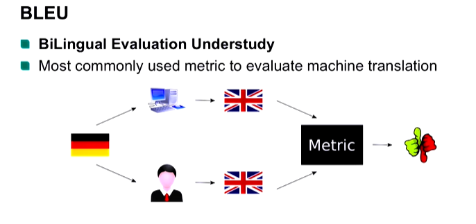
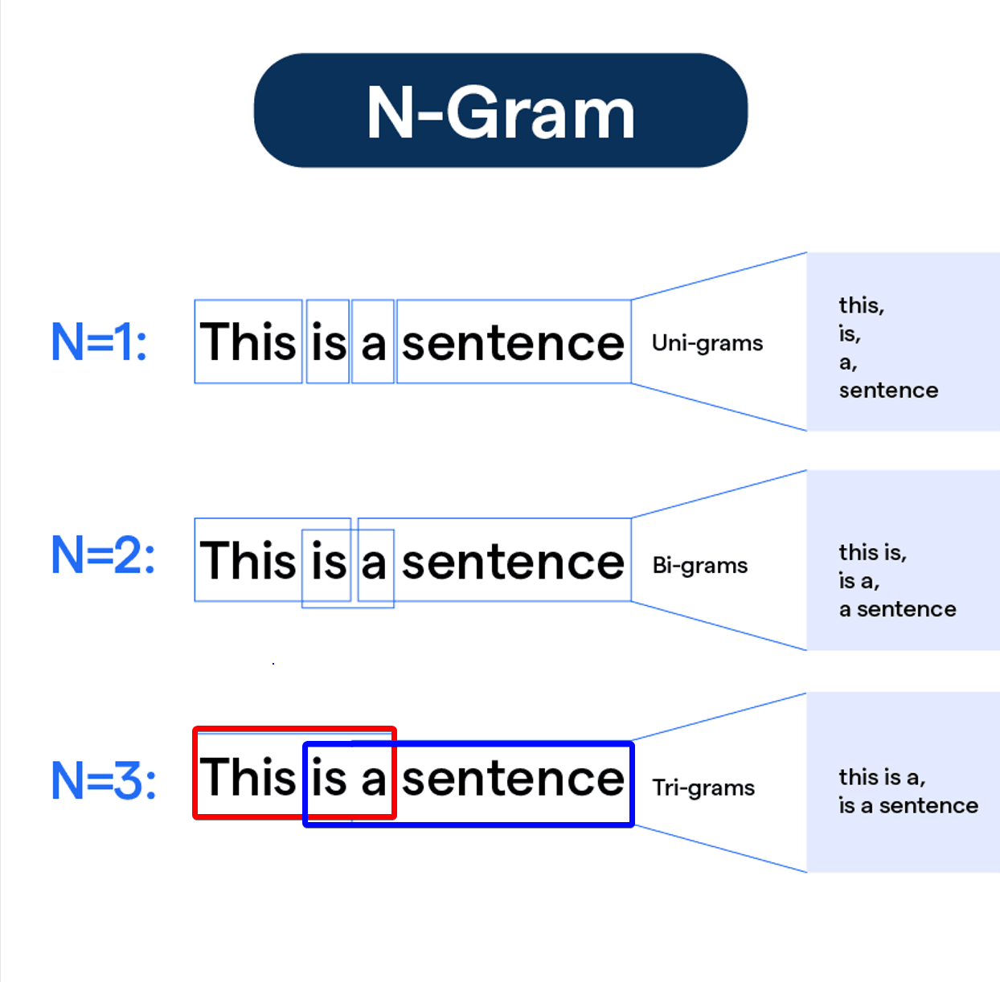
#12
★★★★★
大型語言模型 (Large Language Models, LLMs) 如 GPT (Generative Pre-trained Transformer) 系列，其訓練通常採用什麼策略？
答案解析
大型語言模型的成功很大程度上歸功於「預訓練-微調」(Pre-training and
Fine-tuning) 的範式。首先，模型在包含數十億甚至數萬億詞語的海量、多樣化的無標註文本數據上進行預訓練。預訓練通常採用自監督學習目標，如遮罩語言模型 (Masked Language
Modeling, MLM, 如 BERT) 或下一個詞預測 (Next Token Prediction, 如 GPT)，讓模型從數據本身學習語言的通用模式、語法和語意知識。然後，預訓練好的模型可以在相對較小的、針對特定下游任務（如文本分類、問答）的標註數據上進行微調，使其適應該任務。這種策略有效地利用了大規模數據學習通用知識，並能快速適應新任務。

#13
★★★
詞形還原 (Lemmatization) 和詞幹提取 (Stemming) 的主要區別是什麼？
答案解析
詞形還原和詞幹提取都是將詞語的不同屈折形式（inflected
forms）歸一化處理的技術。主要區別在於：詞形還原 (Lemmatization) 依賴詞彙庫和詞性信息，試圖將詞語還原為其字典中的基本形式（詞元，lemma），例如將 "am",
"are", "is" 都還原為 "be"，將 "cars", "car's" 都還原為 "car"。結果保證是有效的詞語。詞幹提取 (Stemming)
通常使用一套啟發式規則（如 Porter Stemmer）來移除詞語的後綴（有時也包括前綴），以得到詞幹 (stem)。例如，可能將
"studies", "studying" 都提取為 "studi"。詞幹提取速度通常更快，但結果不保證是有效的詞語，且可能過度提取（如 "university" 變
"univers"）或提取不足。

#14
★★★
詞袋模型 (Bag-of-Words, BoW)
是一種簡單的文本表示方法，它的主要缺點是什麼？
答案解析
詞袋模型將文本表示為一個向量，其中每個維度對應詞彙表中的一個詞語，向量的值通常是該詞語在文本中的出現次數（或 TF-IDF 值）。這種方法非常簡單直觀，但其核心假設是將文本視為一堆無序的詞語集合（像袋子裡的詞），完全忽略了詞語之間的順序關係和文本的語法結構。例如，"狗咬人" 和 "人咬狗" 在
BoW 表示下可能完全相同（如果詞彙表只包含 "狗", "咬", "人"），但它們的語意顯然不同。這是
BoW 模型的主要局限性。
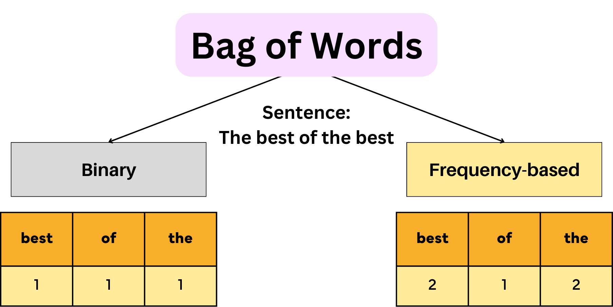
#15
★★★★
循環神經網路 (Recurrent Neural Network, RNN) 特別適合處理序列數據（如文本）的原因是？
答案解析
RNN 的核心特點是其神經元之間存在循環連接。在處理序列數據時，RNN 會在每個時間步接收一個輸入，並根據當前輸入和來自上一個時間步的隱藏狀態 (hidden state)
計算出當前的輸出和新的隱藏狀態。這個隱藏狀態就像模型的「記憶」，包含了到目前為止處理過的序列資訊。這種將歷史資訊不斷傳遞下去的機制，使得 RNN 能夠有效地建模序列數據中元素之間的順序關係和時間依賴性，這對於理解語言（詞語的順序很重要）至關重要。然而，標準 RNN 在處理長序列時會遇到梯度消失/爆炸問題，因此後續發展出了 LSTM、GRU 等改進結構。

#16
★★★
文本摘要 (Text Summarization) 任務旨在？
答案解析
文本摘要是 NLP 的一個重要應用，目標是創建一個能夠保留原始文檔核心資訊的縮減版本。摘要可以是抽取式 (Extractive)，即從原文中選擇重要的句子或短語組合而成；也可以是生成式 (Abstractive)，即模型理解原文內容後，用自己的話重新組織和生成摘要，可能包含原文中沒有的詞語。文本摘要對於快速獲取大量資訊的核心內容非常有幫助。選項 B 是主題模型 (Topic Modeling)，選項
C 是事實查核 (Fact
Checking)，選項 D 是詞性標註。

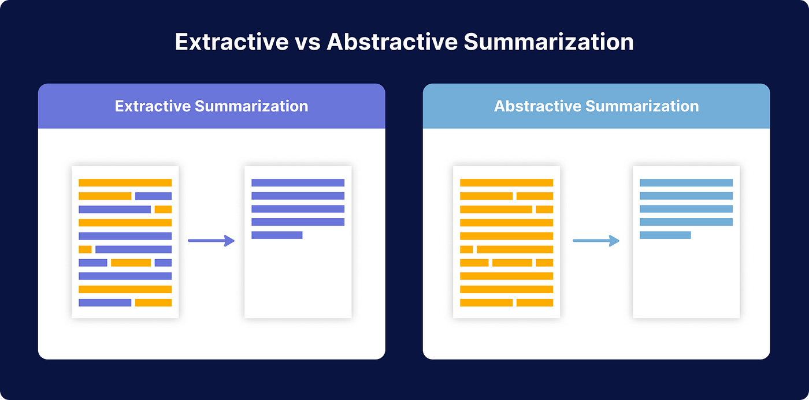
#17
★★★★
在評估文本分類 (Text Classification) 任務（如情感分析）的模型效能時，精確率 (Precision) 和召回率 (Recall) 是常用的指標。請問召回率衡量的是什麼？
答案解析
在二元分類問題中（假設有正類 Positive 和負類
Negative）：
- 精確率 (Precision) = TP / (TP + FP)，衡量的是模型預測為正類的結果中有多少是真正確的（預測的準不準）。
- 召回率 (Recall) = TP / (TP + FN)，衡量的是所有實際為正類的樣本中有多少被模型找出來了（找的全不全）。

#18
★★★★
BERT (Bidirectional Encoder Representations from Transformers)
模型與傳統的單向語言模型（如 GPT-1/2
的預訓練）相比，其主要創新點在於？
答案解析
傳統的語言模型（如 GPT）通常是單向的，即在預測一個詞時只能考慮其左側（前面）的上下文。而 BERT 的核心創新在於其預訓練任務之一——遮罩語言模型 (MLM)。MLM 隨機地遮蓋掉輸入句子中的一部分詞語 (tokens)，然後讓模型根據該詞語左右兩側的上下文來預測被遮蓋掉的原始詞語。這種方式使得 BERT 在預訓練階段就能夠同時利用左右兩邊的上下文資訊來學習每個詞語的表示，從而獲得更深層次、更豐富的雙向語意表示。雖然 BERT 也使用了 Transformer
的注意力機制和遷移學習，但其真正的突破在於通過 MLM
實現的雙向性。
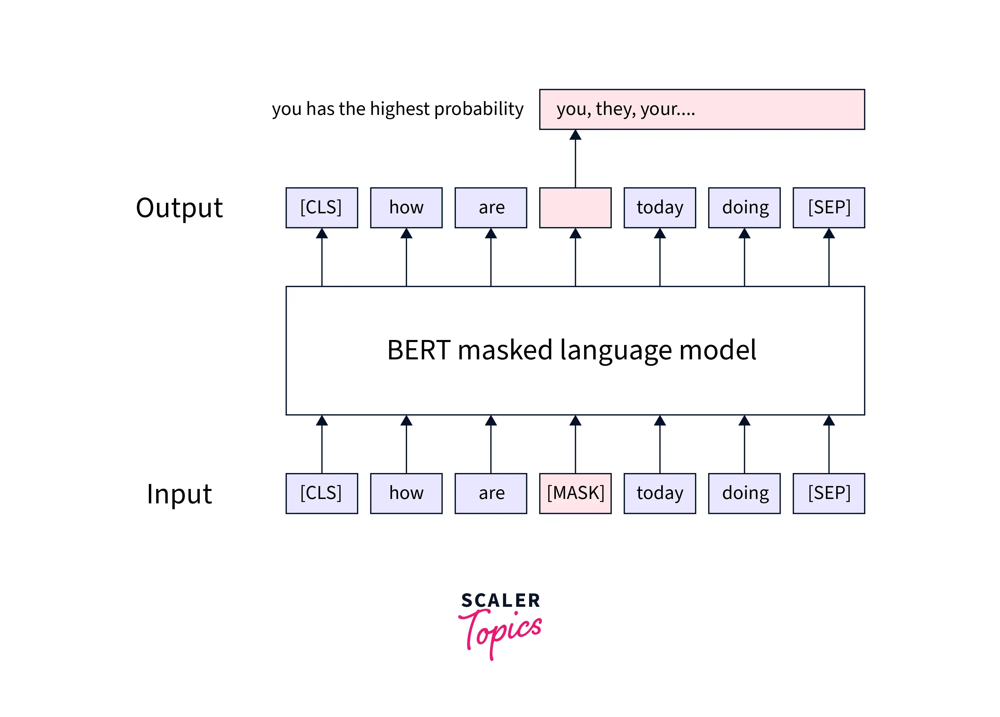

#19
★★
自然語言處理 (NLP) 通常涉及處理哪種類型的資料？
答案解析
NLP
主要關注的是人類用來交流的自然語言，其表現形式主要是文本（如文章、郵件、聊天記錄）和語音。這些資料通常是非結構化的，意味著它們沒有預先定義好的格式或組織方式（不像資料庫中的表格）。處理和理解這種非結構化的語言資料是 NLP 的核心挑戰。選項 B
是傳統數據分析或機器學習常處理的對象。選項 C 屬於電腦視覺。選項 D 也是機器學習的一個重要領域，但與 NLP 不同。
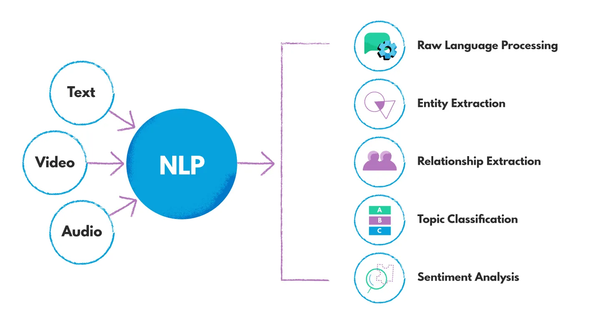
#20
★★★
依存句法分析 (Dependency Parsing) 的主要目標是？
答案解析
依存句法分析是句法分析 (Syntactic Parsing)
的一種方法，它不生成完整的句法樹結構（像成分句法分析 Constituency
Parsing 那樣），而是專注於揭示句子中詞語之間一對一的修飾或依賴關係。分析結果通常表示為一個有向圖，其中節點是詞語，邊表示詞語間的依賴關係（如主謂關係、動賓關係、定中關係等），並標註依賴關係的類型。依存句法分析對於理解句子的深層結構和語意關係非常有幫助。選項 A 是詞性標註，C 是 NER，D
是斷詞。

#21
★★★★
Word2Vec 模型包含兩種主要的訓練架構：CBOW (Continuous
Bag-of-Words) 和 Skip-gram。 Skip-gram 架構的訓練目標是？
答案解析
Word2Vec 的兩種架構目標相反：
- CBOW (Continuous Bag-of-Words): 輸入是某個目標詞（中心詞）周圍的上下文詞語，目標是預測這個中心詞。它試圖從上下文"推斷"中心詞。
- Skip-gram: 輸入是某個中心詞，目標是預測其周圍一定範圍內的上下文詞語。它試圖從中心詞"發散"到上下文。

#22
★★★
N-gram 語言模型是一種基於統計的語言模型，它的核心假設是？
答案解析
N-gram 模型試圖計算一個詞序列（句子）出現的機率
P(W) = P(w1, w2, ..., wn)。直接計算這個聯合機率非常困難，N-gram
模型引入了馬可夫假設 (Markov
Assumption)，即假設一個詞 wi 的出現機率主要由其前面的 N-1
個詞決定，而與更早的詞無關。例如，在 Bigram (N=2) 模型中，P(wi |
w1, ..., wi-1) ≈ P(wi | wi-1)；在 Trigram (N=3) 模型中，P(wi |
w1, ..., wi-1) ≈ P(wi | wi-2, wi-1)。這個假設大大簡化了機率計算，使得模型可以通過統計語料庫中 N-gram
的出現頻率來估計條件機率。
#23
★★★★
相較於 RNN/LSTM，Transformer
模型在處理長序列時的主要優勢是什麼？
答案解析
RNN/LSTM 由於其循環結構，計算必須按時間步順序進行，難以進行大規模平行化。此外，儘管 LSTM/GRU 緩解了梯度消失問題，但在處理非常長的序列時，捕捉遙遠的依賴關係仍然困難。Transformer 完全基於自注意力機制，每個位置的計算可以同時參考序列中的所有其他位置，這使得：1. 平行化：不同位置的計算可以高度平行化，大大加快了訓練速度。2. 長距離依賴：任意兩個位置之間的資訊傳遞路徑長度都是常數 O(1)（直接通過注意力計算），相比
RNN 的 O(n)，更容易捕捉長距離依賴關係。雖然 Transformer 參數通常更多，需要大量數據訓練，但其架構上的優勢使其在處理長序列和大規模訓練方面表現更優。
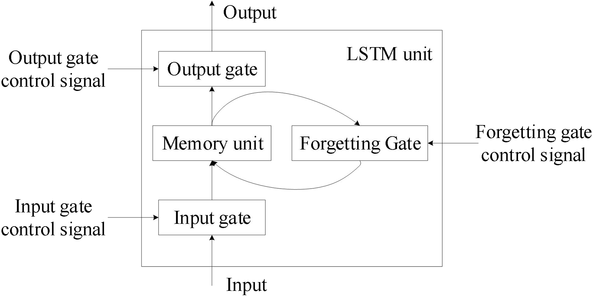
#24
★★★
問答系統 (Question Answering, QA)
根據其回答方式，可以分為哪幾種類型？
答案解析
問答系統可以從多個維度分類：
- 按回答方式：抽取式問答 (Extractive QA) 從提供的上下文（如一篇文章）中直接抽取一段連續的文本作為答案；生成式問答 (Generative QA) 則像人類一樣，理解問題和上下文後，生成一個新的、自然的回答，答案可能不直接出現在原文中。
- 按對話輪數：單輪問答 處理獨立的問題；多輪問答 需要考慮對話歷史。
- 按知識範圍：封閉領域問答 針對特定領域（如產品手冊）；開放領域問答 可以回答關於任何主題的問題，通常需要大規模知識庫或網路搜索。
#25
★★
F1-score 是評估分類模型常用的指標，它是什麼的調和平均數？
答案解析
F1-score（或 F1
measure）是精確率
(Precision) 和召回率
(Recall) 的調和平均數 (Harmonic Mean)。計算公式為：F1 = 2 * (Precision * Recall) / (Precision
+ Recall)。使用調和平均數是因為它會給予較低值更大的權重，只有當 Precision 和 Recall
都比較高時，F1-score 才會高。這使得 F1-score 在需要平衡 Precision 和 Recall
的場景下（例如，不希望漏掉太多正例，也不希望誤判太多負例為正例）是一個比準確率更可靠的指標，尤其是在數據不平衡的情況下。
#26
★★★
為什麼在進行 NLP 任務前通常需要將文本轉換為小寫
(Lowercasing)？
答案解析
將文本全部轉換為小寫是一種常見的文本正規化
(Normalization) 手段。主要目的是為了詞彙歸一化。如果不轉換，模型可能會將句首大寫的 "Apple" 和句中小寫的 "apple"
視為兩個不同的詞符
(tokens)，這會不必要地增加詞彙表的大小，並可能導致數據稀疏問題（某些形式出現次數很少）。轉換為小寫可以確保同一個詞語的不同大小寫形式被映射到同一個詞符，有助於模型更好地學習詞語的統計特性。然而，需要注意的是，在某些任務中（如命名實體識別），大小寫資訊可能是有用的，此時可能不進行小寫轉換或採用更複雜的處理方式。
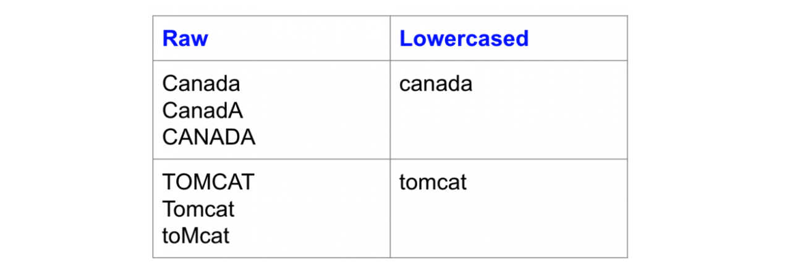
#27
★★
One-hot encoding 在表示詞語時的主要問題是什麼？
答案解析
One-hot encoding
將詞彙表中的每個詞語表示為一個長度等於詞彙表大小的向量，其中該詞語對應的索引位置為 1，其餘位置為 0。這種表示方法存在兩個主要問題：1. 高維稀疏：如果詞彙表很大（例如幾萬或幾十萬），每個詞的向量維度就會非常高，而且向量中絕大多數元素都是
0，非常稀疏。2. 無法表示語意關係：任意兩個不同詞語的 one-hot
向量都是正交的（它們的點積為 0），這意味著模型無法從這種表示中學習到詞語之間的相似性或關聯性（例如 "貓" 和 "狗" 的關係與 "貓" 和 "桌子" 的關係在向量層面沒有區別）。

#28
★★★★
情感分析 (Sentiment Analysis) 的主要目的是？
答案解析
情感分析，也稱為意見探勘 (Opinion Mining)，是
NLP 中一個非常活躍的研究領域和應用方向。其核心目標是利用計算機技術自動分析文本，判斷其中所蘊含的情感色彩或主觀傾向。最常見的任務是將情感分類為正面 (Positive)、負面 (Negative) 或 中性 (Neutral)。更細粒度的分析還可能涉及情感強度、特定方面（如產品的價格、服務）的情感以及情感的來源等。情感分析在輿情監控、產品評論分析、市場調查等領域有廣泛應用。

#29
★★★★
LSTM (Long Short-Term Memory) 和 GRU (Gated Recurrent Unit)
是對標準 RNN 的改進，它們主要解決了 RNN 的哪個問題？
答案解析
標準 RNN 在通過時間反向傳播 (Backpropagation Through
Time, BPTT) 訓練時，由於梯度在時間步上連乘，很容易出現梯度消失（梯度值趨近於 0，導致模型無法學習長期依賴）或梯度爆炸（梯度值指數級增長，導致訓練不穩定）的問題。LSTM 和 GRU
引入了門控機制 (Gating
Mechanism)，如遺忘門 (Forget Gate)、輸入門 (Input Gate)、輸出門 (Output Gate)（LSTM）或重置門 (Reset Gate)、更新門 (Update Gate)（GRU）。這些門控單元可以有選擇地控制資訊的流動、記憶和遺忘，使得梯度能夠在更長的時間步上有效傳播，從而顯著緩解了梯度消失/爆炸問題，使模型能夠更好地捕捉序列中的長期依賴關係。
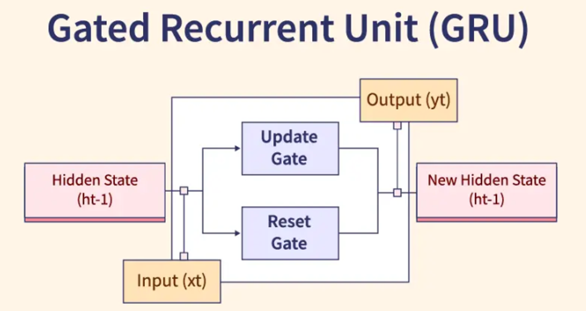
#30
★★★
機器翻譯 (Machine Translation, MT)
按照技術發展階段，主要經歷了哪些範式？
答案解析
機器翻譯的發展歷程主要可以劃分為三個階段：
- 基於規則的機器翻譯 (Rule-Based Machine Translation, RBMT): 早期的方法，依賴語言學家手動編寫大量的雙語詞典和語法規則來進行翻譯。優點是語法相對準確，缺點是規則覆蓋有限、構建成本高、難以處理歧義和口語。
- 統計機器翻譯 (Statistical Machine Translation, SMT): 20 世紀 90 年代興起，利用大規模平行語料庫（成對的原文和譯文句子）學習翻譯模型（如詞對齊、短語翻譯機率）和語言模型。相比 RBMT 效果有顯著提升，但模型複雜，且難以處理長距離依賴。
- 神經機器翻譯 (Neural Machine Translation, NMT): 2014 年左右開始發展，使用深度神經網路（主要是基於 RNN 的 Encoder-Decoder 架構，後來被 Transformer 取代）直接學習從源語言到目標語言的端到端映射。NMT 在翻譯流暢度和準確度上取得了突破性進展，成為當前主流的機器翻譯範式。
#31
★★★
困惑度 (Perplexity) 是評估語言模型常用的指標，較低的困惑度通常表示什麼？
答案解析
困惑度 (Perplexity, PPL)
是語言模型評估指標，它基於模型在測試集上分配的機率。具體來說，PPL 是測試集反向機率的幾何平均值的 2 的指數次方（或自然指數 e
的指數次方，取決於對數底）。直觀上，困惑度可以理解為模型在預測下一個詞時平均有多少種可能的選擇。困惑度越低，表示模型對測試集數據的擬合越好，也就是說模型賦予測試集中實際出現的詞序列更高的機率，表明模型學習到的語言模式更接近真實數據分佈，預測能力更強。
#32
★★★
遷移學習 (Transfer Learning) 在 NLP
領域的應用，例如使用預訓練語言模型 (Pre-trained
Language Models)，主要帶來的好處是？
答案解析
遷移學習的核心思想是將在一個任務（源任務，Source Task）上學到的知識應用到另一個相關的任務（目標任務，Target Task）上。在 NLP
中，預訓練語言模型（如 BERT,
GPT）就是在海量文本數據（源任務：學習通用語言表示）上進行預訓練，然後將學到的模型參數作為基礎，在特定的下游任務（目標任務：如文本分類、問答，通常標註數據較少）上進行微調
(Fine-tuning)。這樣做的好處包括：1. 利用通用知識：模型已經從大規模數據中學到了豐富的語法和語意知識。2. 改善少數據任務效能：即使目標任務的標註數據很少，也能取得較好的效果。3. 加速收斂：微調通常比從頭開始訓練更快收斂。雖然預訓練模型通常很大，但遷移學習本身旨在提高效能和效率，尤其是在目標任務數據有限的情況下。
#33
★★★
歧義 (Ambiguity) 是自然語言處理中的一個主要挑戰，以下哪項是詞彙歧義
(Lexical Ambiguity) 的例子？
答案解析
自然語言充滿歧義，主要分為：
- 詞彙歧義 (Lexical Ambiguity): 同一個詞語有多種不同的含義。例如 "bank"（銀行/河岸）、"bat"（蝙蝠/球棒）、中文的「意思」。選項 A 是典型的詞彙歧義。
- 句法歧義 (Syntactic Ambiguity): 同一個句子可以有多種不同的語法結構。例如選項 B，介詞短語 "with a telescope" 可以修飾動詞 "saw"，也可以修飾名詞 "man"。
- 語意歧義 (Semantic Ambiguity): 句子結構清晰，但語意理解可以有多種。John and Mary are married"John 和 Mary 彼此結婚（他們是夫妻）John 和 Mary 各自都已婚（但不一定是彼此的配偶）
- 語用歧義 (Pragmatic Ambiguity): 語言的理解依賴於上下文或說話者的意圖。例如，反諷。
#34
★★
移除 HTML 標籤是文本前處理中的哪個步驟？
答案解析
文本清洗是文本前處理的一個重要環節，旨在移除文本中與分析目標無關或可能產生干擾的「雜訊」。這些雜訊可能包括 HTML 標籤（如 `
`, ``）、特殊字元、網址 (URLs)、表情符號、多餘的空格或換行符等。移除 HTML 標籤通常在處理從網頁爬取的文本時非常必要，以提取純淨的文本內容進行後續分析。
#35
★★
共指消解 (Coreference Resolution) 的任務目標是？
答案解析
共指消解旨在找出文本中所有指代同一個實體 (entity) 的詞語或短語（稱為 mentions），並將它們歸類到同一個集合（稱為 coreference chain）。例如，在句子 "張三是一位工程師。他很喜歡寫程式。" 中，"張三" 和 "他"
都指向同一個人物。共指消解對於理解文本連貫性、資訊提取、問答系統等至關重要，因為它能幫助系統追蹤文本中實體的提及情況。指代消解 (Anaphora Resolution)
範圍較窄：專門處理前指關係，即後面的詞語指向前面已出現的實體。特點：方向性：只處理「向前指」的關係. 典型例子：代名詞指向前文的名詞
共指消解 (Coreference Resolution)
範圍較廣：處理文本中所有指向同一實體的詞語，不限方向。特點：無方向性：可以是前指、後指、或並列關係, 包含指代消解：Anaphora Resolution 是其子集

#36
★★
語言模型的主要用途之一是？
答案解析
語言模型 (Language Model, LM)
的核心是學習自然語言中詞語序列的機率分佈 P(w1, w2, ..., wn)。基於這個機率分佈，語言模型可以有兩大主要應用：1. 評估序列機率：給定一個句子，模型可以計算出該句子出現的可能性。機率越高的句子通常被認為越自然、越符合語法。這可用於拼寫檢查、語音辨識的後處理等。2.
生成文本：根據已有的詞語序列，預測下一個最可能出現的詞語，從而可以逐詞生成新的文本。這是機器翻譯、對話系統、文本摘要等生成式任務的基礎。
#37
★★★★
資訊檢索 (Information Retrieval, IR)
系統（如搜尋引擎）如何利用 NLP 技術？
答案解析
NLP 技術在現代資訊檢索系統中扮演著關鍵角色：
- 查詢理解 (Query Understanding): 分析使用者輸入的查詢，識別關鍵詞、實體、意圖，處理歧義（如 "apple" 是指水果還是公司？）。
- 查詢擴展 (Query Expansion): 將原始查詢擴展為相關的詞語或同義詞，以召回更多相關文檔（如搜 "筆記型電腦" 時也返回包含 "laptop" 的結果）。
- 文檔處理與索引 (Document Processing & Indexing): 對網頁或文檔進行斷詞、詞幹提取/詞形還原、去除停用詞等前處理，並使用 TF-IDF 或更先進的向量表示（如 BM25, 詞嵌入）建立索引，以便快速查找。
- 相關性排序 (Relevance Ranking): 計算查詢和文檔之間的相關性分數，並根據相關性對搜尋結果進行排序。現代搜尋引擎常使用基於深度學習的排序模型（Learning to Rank, LTR），這些模型深度融合了 NLP 特徵。
#38
★★★
提示工程 (Prompt Engineering) 在與大型語言模型
(LLM) 互動時的作用是？
答案解析
大型語言模型（如 GPT-3, ChatGPT）通常是通過提示 (Prompt) 來進行互動和控制的。提示工程是指研究如何設計有效的提示，以更好地引導
LLM 完成特定任務或生成符合要求的內容。一個好的提示應該清晰、具體，可能包含任務描述、上下文資訊、範例（Few-shot Learning）、輸出格式要求等。通過精心設計提示，使用者可以在不修改模型本身的情況下，顯著影響模型的輸出品質和行為。提示工程已成為有效利用 LLM
的一項關鍵技能。
#39
★★
NLP 與計算語言學 (Computational
Linguistics) 的關係通常被描述為？
答案解析
自然語言處理 (NLP) 和計算語言學 (Computational Linguistics, CL) 是兩個緊密交叉的領域，有時甚至被替換使用。但一般認為它們的側重點略有不同：
- 計算語言學 (CL): 更偏向理論和科學研究，關注用計算的方法來研究和理解人類語言本身的結構、規律和認知過程。目標是建立語言的計算模型。
- 自然語言處理 (NLP): 更偏向工程和應用，目標是開發能夠處理、理解和生成人類語言的計算機系統，以解決實際問題。
#40
★★★
相較於 TF-IDF，使用詞嵌入 (Word Embedding)
作為文本表示的主要優勢是什麼？
答案解析
TF-IDF
主要基於詞頻統計，它能反映詞語在文檔中的重要性，但無法表示詞語本身的語意。不同詞語的
TF-IDF 向量之間通常是稀疏且正交的（或者說相似度計算意義不大）。而詞嵌入（如 Word2Vec, GloVe）學習的是詞語的分布式表示，將詞語映射到一個低維的、稠密的向量空間。在這個空間中，語意相近的詞語其向量表示也相近（例如，通過餘弦相似度計算）。這使得模型能夠利用詞語間的語意關係，具有更好的泛化能力。例如，模型看到
"蘋果" 的數據，也能一定程度上理解 "香蕉"，因為它們的詞向量可能比較接近。
#41
★★★
主題模型 (Topic Modeling)，例如 LDA
(Latent Dirichlet Allocation)，其主要目的是？
答案解析
主題模型是一種無監督學習技術，用於分析大規模文檔集合（語料庫）並從中挖掘潛在的主題資訊。它假設每篇文檔是由多個主題混合而成，而每個主題又是由一系列相關的詞語機率分佈來定義的。例如，對於一個新聞語料庫，主題模型可能會發現像「財經」（包含詞語：股票、市場、經濟、公司）、「體育」（包含詞語：籃球、比賽、球員、得分）這樣的主題。LDA 是最常用的主題模型之一。主題模型有助於理解和組織大型文本數據。


#42
★★★
序列到序列 (Sequence-to-Sequence, Seq2Seq) 模型常用於處理哪些 NLP
任務？
答案解析
Seq2Seq
模型是一種深度學習架構，特別擅長處理輸入和輸出都是可變長度序列的問題。它通常由兩部分組成：一個編碼器 (Encoder)
負責讀取輸入序列並將其壓縮成一個固定長度的上下文向量 (context vector) 或一系列隱藏狀態；一個解碼器 (Decoder) 則根據編碼器的輸出（上下文）逐步生成目標序列。這種架構非常適合那些需要將一種序列轉換為另一種序列的任務，例如：
- 機器翻譯：輸入是源語言句子，輸出是目標語言句子。
- 文本摘要：輸入是長文檔，輸出是短摘要。
- 對話生成：輸入是使用者的話語，輸出是系統的回應。
- 語音辨識：輸入是語音信號序列，輸出是文字序列。
#43
★★
在評估資訊檢索或推薦系統時，MAP (Mean Average Precision) 指標主要考量了什麼？
答案解析
平均精確率均值 (Mean Average Precision, MAP) 是評估排序結果品質的常用指標。對於單個查詢，平均精確率 (Average Precision,
AP) 計算的是在每個相關文檔被檢索到的位置上的精確率 (Precision)
的平均值。這樣做的好處是，相關文檔排名越靠前，對 AP 的貢獻越大。MAP 則是對多個查詢的 AP
值再取平均。因此，MAP
不僅考慮了模型找回了多少相關項（召回率相關），更重要的是考慮了這些相關項是否排在前面（排序品質），是一個對相關性和排名都敏感的指標。

#44
★★★★
「上下文相關詞嵌入」(Contextualized Word Embeddings)，如 ELMo 和 BERT
提供的嵌入，與傳統的靜態詞嵌入（如 Word2Vec）的主要區別是？
答案解析
傳統的詞嵌入（如 Word2Vec, GloVe）是靜態的，即一個詞語（不論它出現在哪個句子或上下文中）只有一個固定的向量表示。這無法解決一詞多義的問題（如 "bank"）。而上下文相關詞嵌入是動態的，一個詞語的向量表示會根據它所在的具體上下文而變化。這是通過使用深度模型（如雙向 LSTM 或 Transformer）來計算得到的，模型會考慮詞語周圍的整個句子（甚至更長）的資訊。因此，在句子 "I went to
the bank to deposit money." 和 "He sat on the river bank." 中，"bank"
這個詞會得到兩個不同的向量表示，更能捕捉其在特定語境下的含義。
#45
★
正規表示式 (Regular Expression) 在 NLP
前處理中常用於？
答案解析
正規表示式是一種強大的文本模式匹配工具。在 NLP 的文本清洗階段，經常使用正規表示式來查找和處理符合特定模式的字串。例如，可以用它來：
- 移除所有標點符號。
- 移除數字。
- 查找和替換特定格式的日期或時間。
- 提取網址 (URLs) 或電子郵件地址。
- 移除 HTML 標籤（雖然可能有更健壯的庫）。
#46
★★
光學字元辨識 (Optical Character Recognition, OCR) 與 NLP 的關係是？
答案解析
OCR
的任務是將包含文字的圖像（例如掃描的文件、照片中的路牌）轉換為機器可讀的文本格式。而
NLP
的輸入通常是文本。因此，當需要分析圖像中的文字內容時（例如，分析掃描合約的條款、理解圖片中的招牌文字），OCR
往往是第一步，它負責從圖像中提取出文字，然後再將提取出的文本交給後續的 NLP
模型進行理解、分析或處理。所以，OCR 可以看作是連接圖像和 NLP 的橋樑之一。雖然 NLP 技術（如語言模型）有時也能輔助提高
OCR 的識別準確率（例如，判斷識別結果是否構成合理的單詞或句子），但其主要關係是前者為後者提供輸入。

#47
★★★
語料庫 (Corpus) 在 NLP 中指的是什麼？
答案解析
語料庫是 NLP 研究和應用的基礎。它指的是為了特定目的（如語言學研究、模型訓練、評估）而收集和整理的大量真實世界語言材料的集合。語料庫可以是純文本（如新聞文章、小說、網頁），也可以是語音數據。根據是否帶有標註資訊，可以分為無標註語料庫 (Unannotated
Corpus) 和 標註語料庫 (Annotated Corpus)（例如，帶有詞性標註、句法樹、命名實體標註的語料庫）。語料庫的規模、多樣性和品質對 NLP
模型的效能有著至關重要的影響。
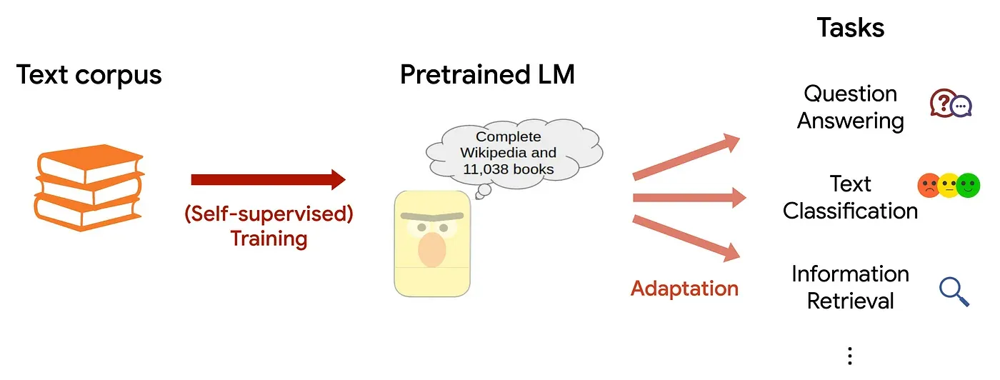
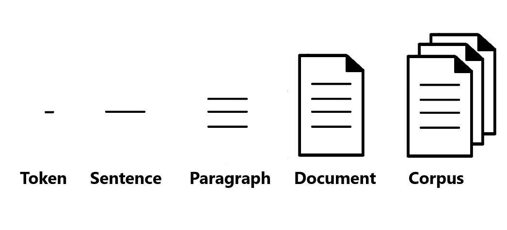
#48
★★
零樣本學習 (Zero-shot Learning) 和少樣本學習
(Few-shot Learning) 在大型語言模型中的應用，讓模型能夠？
答案解析
大型語言模型由於在海量數據上進行了預訓練，學到了廣泛的語言知識和一定的推理能力，展現出了驚人的泛化能力：
- 零樣本學習 (Zero-shot Learning): 模型在完全沒有看過目標任務的任何範例的情況下，僅通過任務描述（包含在提示中）就能執行該任務。
- 少樣本學習 (Few-shot Learning): 在提示中提供少量（通常是 1 到幾十個）目標任務的範例 (demonstrations)，模型就能夠理解任務要求並執行。


#49
★
將一個文檔表示為其包含的所有詞語的 TF-IDF
向量的平均值，這種方法屬於哪種文檔表示層級？
答案解析
NLP 中的文本表示可以在不同粒度上進行：
- 字元級：將文本視為字元序列。
- 詞語級：為每個詞語生成表示（如 one-hot, TF-IDF, 詞嵌入）。
- 句子級：為整個句子生成一個向量表示（如 SBERT）。
- 文檔級：為整個文檔生成一個向量表示。
#50
★
ROUGE (Recall-Oriented Understudy for Gisting Evaluation) 指標常用於評估哪個
NLP 任務？
答案解析
ROUGE (Recall-Oriented Understudy for Gisting Evaluation)
是一系列主要用於評估文本摘要品質的指標，雖然它有時也被應用於機器翻譯的評估。
核心區別與選擇原因：
1. 設計理念不同：ROUGE 的核心是召回率 (Recall)。它主要衡量「參考摘要中的關鍵資訊，有多少被系統生成的摘要所涵蓋了？」。這個理念完美對應了文本摘要任務的目標——確保資訊的完整性，不遺漏要點。
2. 與 BLEU 的對比：機器翻譯任務最常用、最經典的指標是 BLEU，它基於精確率 (Precision)。BLEU 關心的是「系統翻譯出的內容是否準確且流暢？」，更側重於懲罰錯誤的翻譯。因此，在單選題中，ROUGE 對應文本摘要，BLEU 對應機器翻譯，是學術界和業界的慣例。
3. 從名稱看本質：ROUGE 的全名中「Gisting Evaluation」意為「要點/大意評估」，這直接點明了其設計初衷就是為了評估摘要任務。
常見的 ROUGE 指標包括基於 N-gram 的 ROUGE-N (如 ROUGE-1, ROUGE-2) 和基於最長公共子序列 (LCS) 的 ROUGE-L。
結論：儘管 ROUGE 具備多功能性，但它在設計理念、核心指標和學術慣例上，都是為文本摘要任務量身打造的最核心、最常用的自動評估指標。
核心區別與選擇原因：
1. 設計理念不同：ROUGE 的核心是召回率 (Recall)。它主要衡量「參考摘要中的關鍵資訊，有多少被系統生成的摘要所涵蓋了？」。這個理念完美對應了文本摘要任務的目標——確保資訊的完整性，不遺漏要點。
2. 與 BLEU 的對比：機器翻譯任務最常用、最經典的指標是 BLEU，它基於精確率 (Precision)。BLEU 關心的是「系統翻譯出的內容是否準確且流暢？」，更側重於懲罰錯誤的翻譯。因此，在單選題中，ROUGE 對應文本摘要，BLEU 對應機器翻譯，是學術界和業界的慣例。
3. 從名稱看本質：ROUGE 的全名中「Gisting Evaluation」意為「要點/大意評估」，這直接點明了其設計初衷就是為了評估摘要任務。
常見的 ROUGE 指標包括基於 N-gram 的 ROUGE-N (如 ROUGE-1, ROUGE-2) 和基於最長公共子序列 (LCS) 的 ROUGE-L。
結論：儘管 ROUGE 具備多功能性，但它在設計理念、核心指標和學術慣例上，都是為文本摘要任務量身打造的最核心、最常用的自動評估指標。
↑